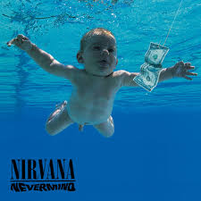
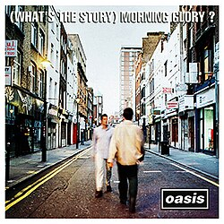

De la cultura rave al rock alternativo: el ritmo inconfundible del fin de siglo.

Segundo álbum de estudio de la banda estadounidense de grunge y rock alternativo Nirvana, publicado el 24 de septiembre de 1991 por el sello discográfico DGC Records
Agregar al Carrito
Segundo álbum de estudio de la banda británica de rock alternativo y britpop Oasis, publicado el 2 de octubre de 1995
Agregar al Carrito
Séptimo álbum de estudio de la banda estadounidense de rock alternativo Red Hot Chili Peppers, lanzado el 8 de junio de 1999 por la discográfica Warner Bros. Records
Agregar al Carrito
Tercer álbum de estudio de la banda estadounidense de rock alternativo The Smashing Pumpkins, publicado el 23 de octubre de 1995 por Virgin Records
Agregar al Carrito